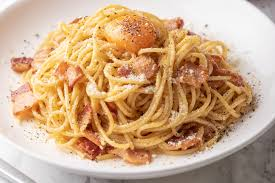

Recette de Pâte Carbonara
Home

Description du plat
Plat italien, gourmand mais bon marché
Ingrédient
- Crème fraîche
- Sel
- Poivre
- Lardons
- Oignon
- Pâtes
- Jaunes d'Oeuf
Etapes de préparation
- Cuire les pâtes dans un grand volume d'eau bouillante salée.
- Emincer les oignons et les faire revenir à la poêle. Dès qu'ils ont bien dorés, y ajouter les lardons.
- Préparer dans un saladier la crème fraîche, les oeufs, le sel, le poivre et mélanger.
- Retirer les lardons du feu dès qu'ils sont dorés et les ajouter à la crème.
- Une fois les pâtes cuite al dente, les égoutter et y incorporer la crème. Remettre sur le feu si le plat a refroidi.
- Servir et bon appétit ! Vous pouvez également agrémenter votre plat avec des champignons.